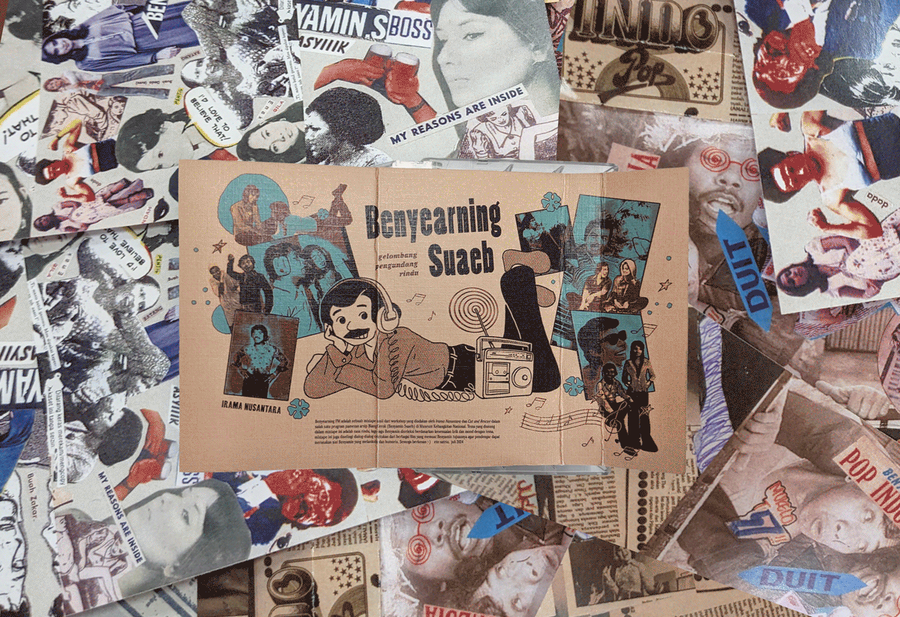
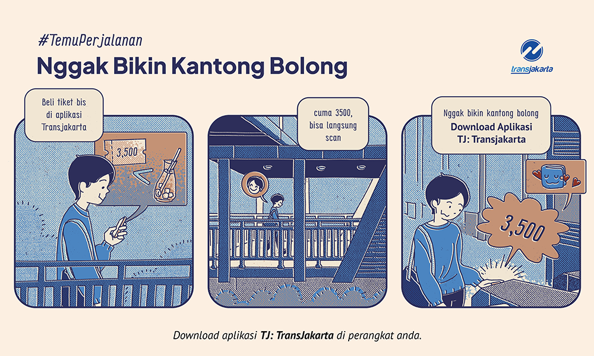
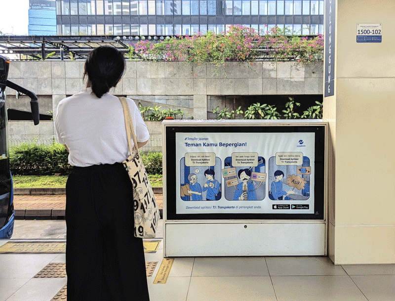
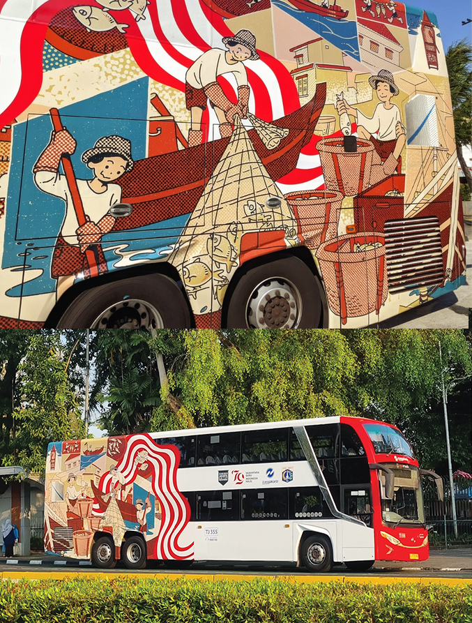

Irama Nusantara - Benyearning FM Mixtape

Illustration for a mixtape celebrating the musical legacy of Benyamin Suaeb. This artwork was exhibited in "BIANG KEROK: Pameran Arsip Benyamin Suaeb" at the Museum Kebangkitan Nasional by Irama Nusantara.see more →
TJ: Transjakarta Apps


A comic strip ad announcing the launch of Transjakarta’s new app for ticketing, bus schedules, and route planning. see more →
Majalah Rintisan Vol. 42

Cover art for Majalah Rintisan Vol.42 that talks about the idea of the "resourceful founder". see more →
Transjakarta Pesona dan Karya dari Nusantara

Livery illustration for Transjakarta city tour bus to celebrating Indonesia’s Independece Day with the theme "The Charm and Creations of Nusantara". see more →